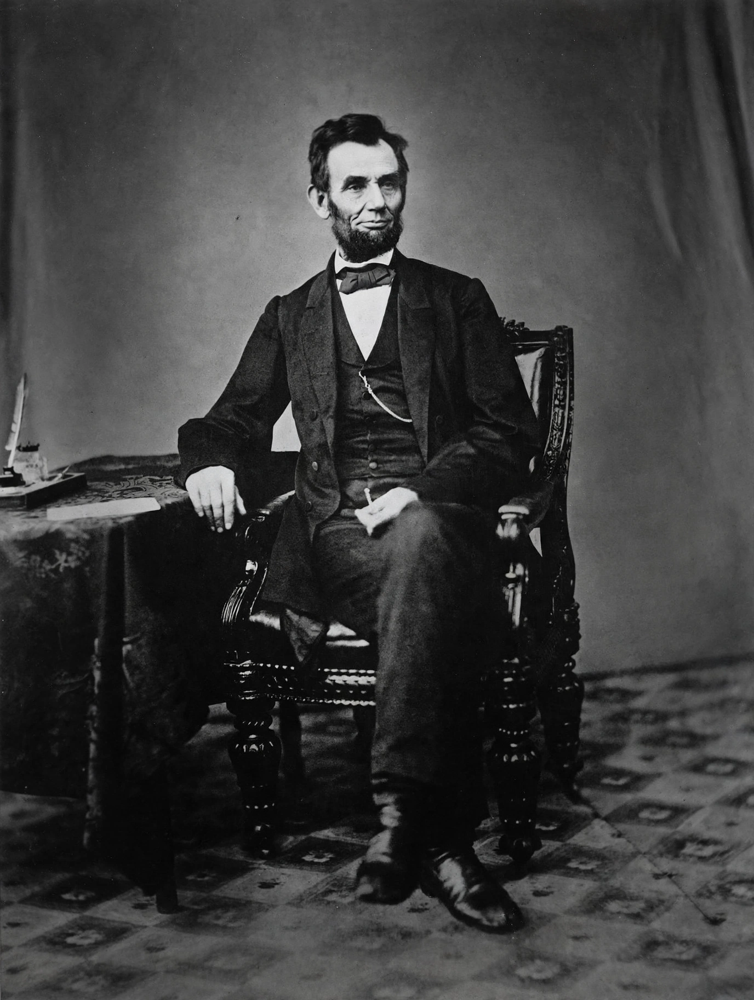

Abraham Lincoln
| Born | February 12, 1809, Hodgenville, Kentucky |
|---|---|
| Died | April 15, 1865 (aged 56), Washington, D.C. |
| Party | Republican (National Union in 1864) |
| Known for | Preserving the Union; Emancipation Proclamation; Gettysburg Address |

[Image: the famous portrait photograph of Abraham Lincoln, bearded, in a dark suit, taken in 1863 by Alexander Gardner]Abraham Lincoln (February 12, 1809 – April 15, 1865) was the 16th president of the United States, serving from 1861 until his assassination in 1865. He led the United States through the American Civil War, preserved the Union, abolished slavery in the rebellious states through the Emancipation Proclamation, and strengthened the federal government.
Born in a log cabin in Kentucky and largely self-educated, Lincoln worked as a lawyer in Springfield, Illinois, served one term in the U.S. House of Representatives, and rose to national prominence through his 1858 debates with Stephen A. Douglas.
Presidency and Civil War
Lincoln's election in 1860 prompted seven Southern states to secede and form the Confederacy; war began with the attack on Fort Sumter in April 1861. As commander-in-chief he struggled to find effective generals before settling on Ulysses S. Grant, and he suspended habeas corpus in places, a controversial wartime measure.
On January 1, 1863, he issued the Emancipation Proclamation, declaring enslaved people in the rebellious states free and allowing Black men to enlist in the Union Army. In November 1863 he delivered the Gettysburg Address, one of the most famous speeches in American history, redefining the war as a struggle for equality and popular government.
Assassination
Re-elected in 1864, Lincoln pressed for the Thirteenth Amendment abolishing slavery and spoke of reconciliation in his second inaugural address. On April 14, 1865, five days after Lee's surrender at Appomattox, he was shot at Ford's Theatre in Washington, D.C. by John Wilkes Booth, and died the following morning.
Lincoln is consistently ranked by historians among the greatest American presidents. He is memorialised on Mount Rushmore, the penny and the five-dollar bill, and at the Lincoln Memorial in Washington.